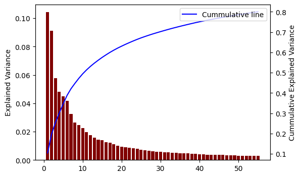
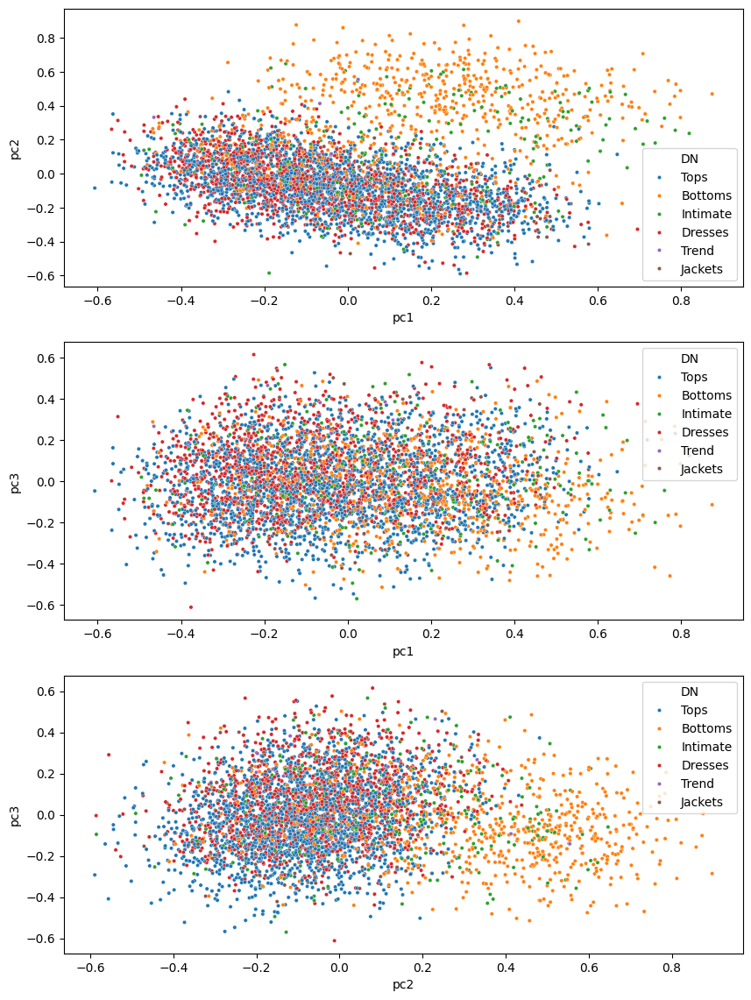

import osText Feature Extraction From Hidden States
This notebook shows how to extract and utilize the hidden states of a Roberta language model for a variety of tasks
#This will specify a (or a list) of GPUs for training
os.environ['CUDA_VISIBLE_DEVICES'] = "0"from that_nlp_library.text_transformation import *
from that_nlp_library.text_augmentation import *
from that_nlp_library.text_main_lm import *
from that_nlp_library.utils import seed_everything
from that_nlp_library.model_lm_main import *from underthesea import text_normalize
from functools import partial
from pathlib import Path
from transformers import AutoTokenizer, AutoConfig, AutoModelForMaskedLM
from datasets import load_dataset
import pandas as pd
import numpy as np
from transformers import DataCollatorForLanguageModelingFinetune a Roberta Language Model (with line-by-line tokenization)
Create a TextDataLMController object
We will reuse the data and the preprocessings in this tutorial
In order to extract a feature vector from a review sentence in the dataset, we can directly use pretrained models such as Roberta, GPT2, … But if our dataset is vastly different from the datasets these pretrained models are trained on, we can finetune these pretrained models on our dataset before extracting the feature vector. And that’s exactly what we are going to do now.
dset = load_dataset('sample_data',data_files=['Womens_Clothing_Reviews.csv'],split='train')
ddict = dset.train_test_split(test_size=0.2,seed=42)
ddict['validation'] = ddict['test']
del ddict['test']# For now, we will filter missing review text rows here instead of relying the data controler
ddict = ddict.filter(lambda x: x['Review Text'] is not None)ddictDatasetDict({
train: Dataset({
features: ['Clothing ID', 'Age', 'Title', 'Review Text', 'Rating', 'Recommended IND', 'Positive Feedback Count', 'Division Name', 'Department Name', 'Class Name'],
num_rows: 18111
})
validation: Dataset({
features: ['Clothing ID', 'Age', 'Title', 'Review Text', 'Rating', 'Recommended IND', 'Positive Feedback Count', 'Division Name', 'Department Name', 'Class Name'],
num_rows: 4530
})
})tdc = TextDataLMController(ddict,
main_text='Review Text',
metadatas='Title',
content_transformations=[text_normalize,str.lower],
seed=42,
verbose=True
)Define our tokenizer for Roberta
_tokenizer = AutoTokenizer.from_pretrained('roberta-base')/home/quan/anaconda3/envs/nlp_dev/lib/python3.10/site-packages/huggingface_hub/file_download.py:1132: FutureWarning: `resume_download` is deprecated and will be removed in version 1.0.0. Downloads always resume when possible. If you want to force a new download, use `force_download=True`.
warnings.warn(Process and tokenize our dataset (using line-by-line tokenization)
block_size=112
tdc.process_and_tokenize(_tokenizer,line_by_line=True,max_length=block_size)
# set max_length=-1 if you want the data collator to pad-------------------- Start Main Text Processing --------------------
----- Metadata Simple Processing & Concatenating to Main Content -----
Done
-------------------- Text Transformation --------------------
----- text_normalize -----
----- lower -----
Done
-------------------- Train Test Split --------------------
Validation split already exists
Done
-------------------- Dropping unused features --------------------
Done
- Number of rows leaked: 2, which is 0.01% of training set
Filtering leaked data out of training set...
Done
-------------------- Shuffling and flattening train set --------------------
Done
-------------------- Tokenization --------------------
Donetdc.main_ddictDatasetDict({
train: Dataset({
features: ['Title', 'Review Text', 'input_ids', 'attention_mask', 'special_tokens_mask'],
num_rows: 18109
})
validation: Dataset({
features: ['Title', 'Review Text', 'input_ids', 'attention_mask', 'special_tokens_mask'],
num_rows: 4530
})
})And set the data collator
tdc.set_data_collator(is_mlm=True,mlm_prob=0.15)Initialize and train Roberta Language Model
_config = AutoConfig.from_pretrained('roberta-base',vocab_size=len(_tokenizer))_model = language_model_init(AutoModelForMaskedLM,
config=_config,
cpoint_path='roberta-base',
seed=42
)Total parameters: 124697433
Total trainable parameters: 124697433Create a model controller
controller = ModelLMController(_model,data_store=tdc,seed=42)And we can start training our model
lr = 1e-4
bs=32
wd=0.01
epochs= 6
warmup_ratio=0.25
controller.fit(epochs,lr,
batch_size=bs,
weight_decay=wd,
warmup_ratio=warmup_ratio,
save_checkpoint=False,
)
[1698/1698 11:05, Epoch 6/6]
| Epoch | Training Loss | Validation Loss | Accuracy |
|---|---|---|---|
| 1 | No log | 1.502509 | 0.657702 |
| 2 | 1.706200 | 1.509666 | 0.656255 |
| 3 | 1.706200 | 1.423058 | 0.671800 |
| 4 | 1.476100 | 1.344976 | 0.684443 |
| 5 | 1.476100 | 1.309737 | 0.691151 |
| 6 | 1.308800 | 1.293480 | 0.694945 |
[142/142 00:07]
Perplexity on validation set: 3.634Finetuning from a pretrained model results in a massive improvement in terms of metrics
controller.trainer.model.save_pretrained('./sample_weights/roberta_lm_model')What can we do with feature vectors?
Dimensionality Reduction
Typically for dimensionality reduction, the two main downstream tasks we can perform on the reduced-dimension data is either for visualization, or as an input of simpler machine learning models (regression, tree-related algorithms)
For dimensionality reduction, it’s important to determine the target number of lower dimensions that we will perform on the original data. We will use a popular algorithm called PCA, thus those dimensions are the principal components (PC). Thus, we can use the explained variance ratio (calculated from PC’s’ eigenvalue) to determine the amount of PC needed for our dimension reduction task
from sklearn.decomposition import PCA
import matplotlib.pyplot as plt
import seaborn as snsdef plot_cummulative_variance(X,figsize=(6,4),dim_to_visualize=None):
if dim_to_visualize is None: dim_to_visualize = X.shape[1]
_pca = PCA(svd_solver='full',random_state=42)
_tmp = _pca.fit_transform(X)
fig,ax = plt.subplots(figsize=figsize)
ax.bar(1+np.arange(dim_to_visualize),_pca.explained_variance_ratio_[:dim_to_visualize],color='maroon')
ax.set_ylabel('Explained Variance')
ax2 = ax.twinx()
ax2.plot(1+np.arange(dim_to_visualize),np.cumsum(_pca.explained_variance_ratio_[:dim_to_visualize]),label='Cummulative line',color='blue')
ax2.set_xlabel('n_components')
ax2.set_ylabel('Cummulative Explained Variance')
ax2.legend(loc='upper right')
plt.show()plot_cummulative_variance(hidden_from_val['hidden_states'],dim_to_visualize=55)
we can achieve roughly 80% total variance with only ~55 components (out of 768, which is only ~7% of data). The first 3 PC are the most important PC with the highest explained variance.
Let’s try to visualize the first 3 PCs
_pca = PCA(svd_solver='full',n_components=3,random_state=42)
_pca_coord = _pca.fit_transform(hidden_from_val['hidden_states'])pca_df = pd.DataFrame(_pca_coord,columns=['pc1','pc2','pc3'])pca_df['DN']=ddict['validation']['Department Name']
pca_df['DN'].fillna('Tops',inplace=True)/tmp/ipykernel_51605/3688443385.py:2: FutureWarning: A value is trying to be set on a copy of a DataFrame or Series through chained assignment using an inplace method.
The behavior will change in pandas 3.0. This inplace method will never work because the intermediate object on which we are setting values always behaves as a copy.
For example, when doing 'df[col].method(value, inplace=True)', try using 'df.method({col: value}, inplace=True)' or df[col] = df[col].method(value) instead, to perform the operation inplace on the original object.
pca_df['DN'].fillna('Tops',inplace=True)fig,axs = plt.subplots(3,1,figsize=(10,14))
sns.scatterplot(data=pca_df,x='pc1',y='pc2',hue='DN',ax=axs[0],s=10)
sns.scatterplot(data=pca_df,x='pc1',y='pc3',hue='DN',ax=axs[1],s=10)
sns.scatterplot(data=pca_df,x='pc2',y='pc3',hue='DN',ax=axs[2],s=10)
We can somewhat distinguish a clear cluster when visualizing PC1 and PC3 on the top right. Combining with the Department Name, this cluster contains mostly “Bottoms” and “Intimiate” clothing items. Therefore, using these PCs, we can build a simple classification model to classify Department Name
Sentence Similarity
When each sentence is represented by a dense feature vector, we can perform one of the popular task of sentence similarity: which sentences are the most similar to a given sentence? In this experiment, we will use FAISS library, which is designed specifically for efficient similarity search and clustering of dense vectors
import faiss
import time
import pandas as pd
import numpy as np
from datasets import load_from_diskdef faiss_find_NN(index,X,k):
tic = time.perf_counter()
D, I = index.search(X, k=k)
toc = time.perf_counter()
print(f"Execution time: {toc - tic:0.4f} seconds")
return I,D
def faiss_prepare_gpu_index(X):
res = faiss.StandardGpuResources()
index = faiss.IndexFlatL2(X.shape[1])
gpu_index = faiss.index_cpu_to_gpu(res, 0, index)
gpu_index.add(X)
return gpu_index
def faiss_prepare_gpu_index_fast(X,nlist,nprobe=1):
"""
https://github.com/facebookresearch/faiss/wiki/Faster-search
- nlist parameter in the IndexIVFFlat index in Faiss refers to the number of Voronoi cells,
or clusters, that the index uses to partition the vector space.
- nprobe parameter specifies the number of cells to visit during the search,
can be used in conjunction with nlist to further fine-tune the performance of the index.
For example, you can increase nlist to speed up the search
and then increase nprobe to compensate for the potential decrease in accuracy.
"""
res = faiss.StandardGpuResources()
d = X.shape[1]
quantizer = faiss.IndexFlatL2(d)
index = faiss.IndexIVFFlat(quantizer,d,nlist)
assert not index.is_trained
index.train(X)
assert index.is_trained
index.add(X)
index.nprobe = nprobe
gpu_index = faiss.index_cpu_to_gpu(res,0,index)
return gpu_indexWe will produce the feature vectors for the entire dataset
full_dset = load_dataset('sample_data',data_files=['Womens_Clothing_Reviews.csv'],split='train')
# For now, we will filter missing review text rows here instead of relying the data controler
full_dset = full_dset.filter(lambda x: x['Review Text'] is not None)_config = AutoConfig.from_pretrained('./sample_weights/roberta_lm_model',output_hidden_states=True)
trained_model = language_model_init(AutoModelForMaskedLM,
cpoint_path='./sample_weights/roberta_lm_model',
config=_config
)
controller2 = ModelLMController(trained_model,data_store=tdc,seed=42)Total parameters: 124697433
Total trainable parameters: 124697433all_hiddens = controller2.get_hidden_states_from_raw_dset(dset=full_dset,
state_name='hidden_states',
state_idx=[-1,0])-------------------- Start Test Set Transformation --------------------
----- Metadata Simple Processing & Concatenating to Main Content -----
Done
-------------------- Text Transformation --------------------
----- text_normalize -----
----- lower -----
Done
-------------------- Tokenization --------------------
Done# all_hiddens = load_from_disk("./sample_weights/all_hiddens")all_hiddens['hidden_states'].shape(22641, 768)gpu_index = faiss_prepare_gpu_index(all_hiddens['hidden_states'])idxs,D = faiss_find_NN(gpu_index,all_hiddens['hidden_states'],k=5) # find 20 nearest neighborsExecution time: 0.0659 secondsi=1
print(f"1. Original Sentence: {all_hiddens['Review Text'][i]}\n")
print('2. Neighbors:')
for a,b in enumerate(idxs[i]):
print(f" - Sentence: {all_hiddens['Review Text'][b]}")
print(f" - Distance: {D[i][a]}")
print('-'*10)1. Original Sentence: . love this dress ! it's sooo pretty . i happened to find it in a store , and i'm glad i did bc i never would have ordered it online bc it's petite . i bought a petite and am 5 ' 8 " . i love the length on me - hits just a little below the knee . would definitely be a true midi on someone who is truly petite .
2. Neighbors:
- Sentence: . love this dress ! it's sooo pretty . i happened to find it in a store , and i'm glad i did bc i never would have ordered it online bc it's petite . i bought a petite and am 5 ' 8 " . i love the length on me - hits just a little below the knee . would definitely be a true midi on someone who is truly petite .
- Distance: 3.0517578125e-05
----------
- Sentence: this dress is beautiful . when i received the dress , it was true to size on the bust and length . i didn't purchase the petite , but i wish i did since i am 5 ' 2 . i tried to wear my wedges , but it's still long . i love the dress and would definitely recommend it .
- Distance: 0.445709228515625
----------
- Sentence: pretty everyday dress . this is a great everyday dress . i bought it in black and it looks cute with wedges . it's a little boxy but that also makes it super comfy so i don't mind that too much . definitely order one-size down if you're between sizes . you may want to consider petite , if it's available , becuase i found it to be a bit long for my taste . ( i'm 5 ' 5 " and it hits at the knee ) . i've already worn it a few times and have had received several compliments .
- Distance: 0.4746246337890625
----------
- Sentence: adorable ! . i ran into retailer to actually return a dress and saw this hanging in the petite section and had to try it . at almost 5 ' 4 " i can sometimes go between regular and petite sizing . and thankfully i could grab the petite with this dress . ( they didn't have the regular size ) it's airy and summery , i love the design of the swing . it's loose , but not tent like . the length came to about 3 inches above my knee . it's not see though at all ! i had black bottoms on and you couldn't see them . another plus it tha
- Distance: 0.479583740234375
----------
- Sentence: love this dress ! . i'm 5 ft 3 inches , 130 lbs . this dress fits perfect ! i bought a 4 r . the petite 4 probably would have fit and been a inch or two shorter but i don't the regular looked bad . it hits an inch or two below my knee . medium thickness of fabric is forgiving even though the dress hugs in all the right places . beautiful dress ! !
- Distance: 0.48602294921875
----------i=2
print(f"1. Original Sentence: {all_hiddens['Review Text'][i]}\n")
print('2. Neighbors:')
for a,b in enumerate(idxs[i]):
print(f" - Sentence: {all_hiddens['Review Text'][b]}")
print(f" - Distance: {D[i][a]}")
print('-'*10)1. Original Sentence: some major design flaws . i had such high hopes for this dress and really wanted it to work for me . i initially ordered the petite small ( my usual size ) but i found this to be outrageously small . so small in fact that i could not zip it up ! i reordered it in petite medium , which was just ok . overall , the top half was comfortable and fit nicely , but the bottom half had a very tight under layer and several somewhat cheap ( net ) over layers . imo , a major design flaw was the net over layer sewn directly into the zipper - it c
2. Neighbors:
- Sentence: some major design flaws . i had such high hopes for this dress and really wanted it to work for me . i initially ordered the petite small ( my usual size ) but i found this to be outrageously small . so small in fact that i could not zip it up ! i reordered it in petite medium , which was just ok . overall , the top half was comfortable and fit nicely , but the bottom half had a very tight under layer and several somewhat cheap ( net ) over layers . imo , a major design flaw was the net over layer sewn directly into the zipper - it c
- Distance: 0.0
----------
- Sentence: wanted to love . . i was so excited for this dress to arrive , but when it did , it was a major disappointment . there is no lining on the skirt portion of the dress leaving it sheer . also , the top part along the chest puckered in a weird unflattering way . the colors were beautiful , but not enough to to make up for the other design flaws . i am 5 ' 6 " 140 lb and the small fit tts . will be sending it back
- Distance: 0.29474639892578125
----------
- Sentence: sloppy fit . tried this dress in a small . i am 5 ' 6 " , 135 lbs , 34 c . the small was huge - the sash helped some , but looked like a potato sack on me . also , i noticed the fabric was piling slighly in the store . i had high hopes for this dress but left this one in the store .
- Distance: 0.34699249267578125
----------
- Sentence: gorgeous but ... . this dress caught my eye online and i had to have it . when it arrived it was still just as pretty as i remembered . beautiful , vibrant colors and a unique oversized floral on a flirty , swishy fabric . unfortunately the cut was really strange . after reading several reviews i went with an xs , but i'm not sure a s would have solved all the fit problems i was having . while everything from the waist down fit perfectly , the arms were cut too tight , the chest was huge and yet i struggled to zip it up . an
- Distance: 0.35202789306640625
----------
- Sentence: wanted to love it , but ... . i saw the colors and texture of this top and wanted to love it however when i put it on it just did not work . the cut was so strange . it runs very small in the shoulders and then flairs out so much at the waist . i even ordered up a size based on reviews . i ordered an 8 when i normally where a small ( 6 ) in things . the shoulders were still too small and it was way too big every where else .
- Distance: 0.35425567626953125
----------